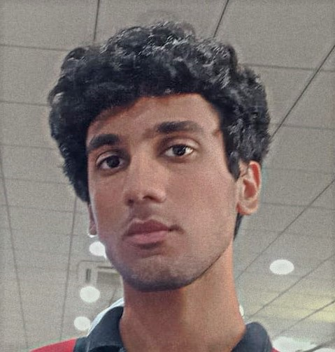

Husnain
Raza
Junior Web developer
- Phone Number: +92 3115931596
- Email: sunnyraza722@gmail.com
- CNIC: 61101-112265-1
- Languages
- Nationality: Pakistani
4400, Irfan Abad, Tramri Chowk,
Islamabad, Pakistan
Career Objective:
Seeking a challenging position in a reputed organization where I can learn new skills, expand my knowledge, and leverage my learnings.
To get an opportunity where I can make the best of my potential and contribute to the organization's growth.
Work History:
-
Junior Web Developer
Frappe | ERPnext
- Engaged with clients to plan and optimize site issues and queries.
- Multi-tasked across multiple functions and roles to meet deadlines and organizational expectations
- Built website interfaces with HTML and CSS
(Jan-2023 till now)
-
Call Centre | CSR
BPO Islamabad
- Participated in team projects, demonstrating an ability to work collaboratively and effectively.
- Proved successful working within tight deadlinesand a fast-paced environment.
- Exercised leadership capabilities by successfully motivating and inspiring others.
(Oct-2020 to Nov-2022)
Education:
-
Matriculation:
- Science
ICB G-6/3 Islamabad
2019-2021
-
Intermediate
- Pre-Medical
IMPGC H-8 Islamabad
2021-2023
Computer Skills:
- HTML
- CSS
- Java
- Node
- Python
References:
My recent Project